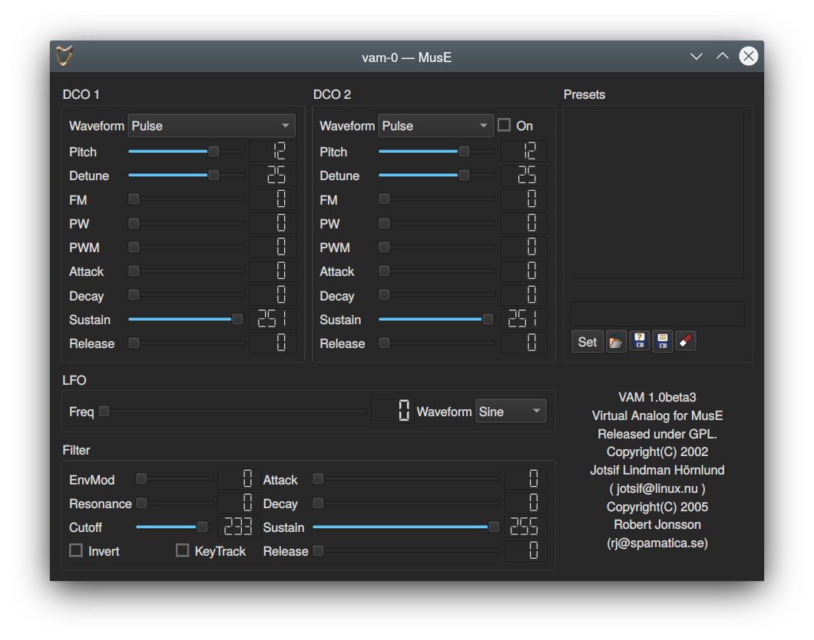
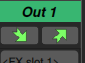
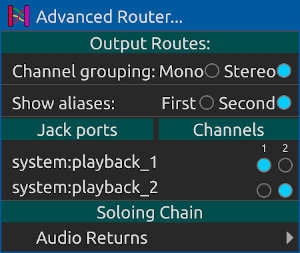
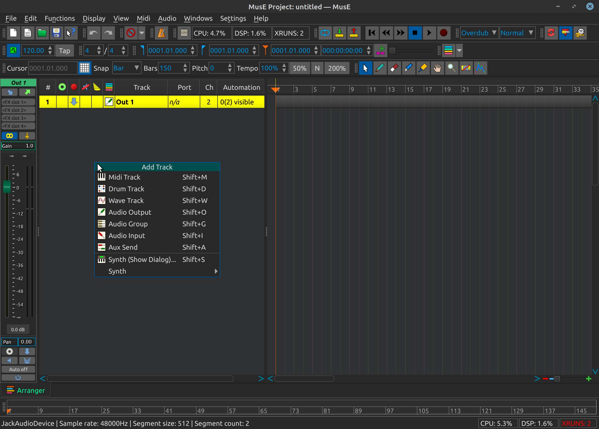
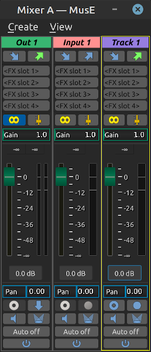
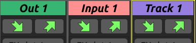
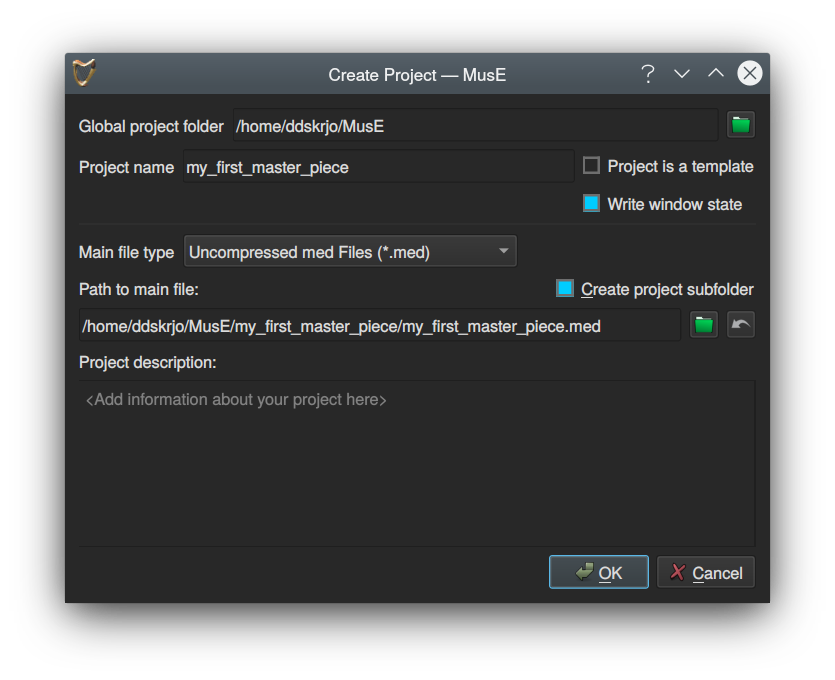
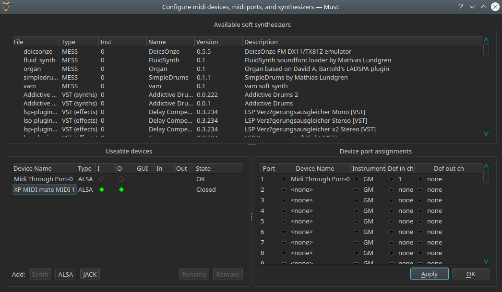

Tutorial para Principiantes
Para obtener una idea rápida de lo que puede lograr MusE, siga este tutorial para principiantes.
También hay varios videos sobre este tema aquí: Tutorials
Prueba de Sintetizador por Software
Inicie MusE como se describió en el capítulo anterior e intente asegurarse de que el servidor de audio Jack se inicie con la configuración suficiente para permitir la salida de audio sin microcortes.
Como alternativa, puede optar por iniciar MusE con el entorno Pulse Audio (vea Ejecutando MusE con el entorno PulseAudio Ejecutando MusE con el entorno PulseAudio).
Además, asegúrese de que su sistema realmente pueda emitir sonido chequeando, por ejemplo, que no haya dejado el volumen a cero. No es que eso no le haya pasado a nadie :)
Con MusE en funcionamiento, haga clic con el botón derecho en el panel pistas (track panel) (vea Arreglador) y seleccione Synth > MESS > vam soft synth. Debería aparecer una pista de Soft Synth llamada vam-0.
Ahora haga clic derecho una vez más en el panel de pistas y seleccione Pista Midi (Midi Track). Aparece otra pista llamada Track 1, y su columna Port en la lista de pistas debería mostrar que está vinculada al sintetizador que se acaba de crear vam-0. Si por alguna razón esto no es así, haga clic con el botón derecho en la columna Port para abrir una lista desplegable de dispositivos disponibles y elija vam-0.
Ahora seleccione el icono del Lápiz de la barra de herramientas, o presione la tecla de método abreviado D. Mueva el mouse sobre la ventana del Arreglador (arranger canvas) como se hace referencia en el Arreglador Arranger y apunte a la pista midi. El cursor del ratón debería haber cambiado a un lápiz pequeño. Dibuje una parte a lo largo de la pista midi con el ratón. Para este ejercicio, no importa dónde o qué tan grande sea la parte dibujada. Cuando haya terminado, haga doble clic en la parte dibujada. Esto abrirá el editor de teclado (pianoroll editor). A la izquierda del Piano Roll hay teclas de piano en una línea vertical; intente hacer clic en las teclas de este teclado virtual; cada clic debe producir un sonido en el sintetizador (tal vez de calidad cuestionable, pero un sonido de todos modos).
Si esto produce sonido, habrá completado con éxito esta prueba. Al hacer clic en ESC, se cerrará el editor midi y volverá a la ventana del arreglador.
Como última cosa, ubique la columna puerto (port) en la lista de pistas y busque la entrada para el sintetizador vam, debería leerse como un número y la palabra vam-0, haciendo doble clic en el puerto debería aparecer la GUI (interfaz gráfica) para el sintetizador Vam, como se muestra en la siguiente captura de pantalla:

No hay sonido
Si obtuvo sonido en el ejercicio anterior, puede continuar con el siguiente capítulo o seguir leyendo para obtener más información para no tener problemas más adelante.
Si no hay sonido, tenemos que buscar fallas. En primer lugar, abra la ventana Mezclador (Mixer) (F10) y busque la pista de vam-0 allí.
Ahora recupere la ventana Piano Roll y alinee las ventanas para que pueda ver las teclas del piano y el mezclador (analice el capítulo 5 función por función para obtener más información sobre estas ventanas).
Al presionar una de las teclas en el teclado virtual, el medidor en la banda mezcladora (mixer strip) debe iluminarse en verde para indicar que el sintetizador está emitiendo sonido. Si no es así, intente rastrear sus pasos hacia atrás y vea si hizo algo diferente a lo descrito. Ahora, si el medidor se enciende pero aún no hay sonido, debemos verificar el enrutamiento entre las pistas.
Para comprobar el enrutamiento de salida, haga clic en la ventana del Arreglador nuevamente y seleccione la pista Out 1; esta es la salida predefinida que MusE crea por defecto al inicio. En la parte superior de Mixer Strip hay dos botones que parecen flechas, estos muestran las entradas y salidas de la pista.

Haga clic en el de la derecha (la flecha de salida), y asegúrese de que esté conectado a algunas salidas válidas en su sistema.

Haga clic en las salidas para seleccionarlas, si hizo cambios aquí, vuelva e intente hacer clic en el teclado Piano Roll de nuevo, esperando que haya sido de utilidad. Si aún hay problemas, asegúrese de que su sistema en realidad pueda emitir sonido a través de Jack; sin embargo, esto está fuera del alcance de este manual. Un consejo adicional es probar la aplicación jack_simple_client que generalmente se incluye con Jack. Esta es una herramienta de línea de comandos que, cuando se ejecuta, debe emitir un tono en el dispositivo de salida de las tomas.
$> jack_simple_client
Este podría ser el momento de plantear el concepto de apoyo comunitario. El software de código abierto nunca podría ser lo que es sin el apoyo brindado por personas en foros y listas de correo. Si la información proporcionada en este documento no es suficiente, intente buscar en Google su problema y/o póngase en contacto con uno de los foros en línea para MusE o Audio de Linux en general. Vea algunos consejos en la Sección de soporte.
Introducción a la grabación de audio
En este punto, haremos un pequeño desvío hacia la grabación de audio. La obtención de audio en MusE ya se ha tratado en los capítulos anteriores, por lo que nos concentraremos ahora en los pasos adicionales necesarios para grabar sonido en una pista de audio (audio track).
Cuando MusE se activa por primera vez, la pista de salida (output track) ya ha sido creada (más sobre esto en el capítulo de plantillas). Para continuar con la grabación de audio, necesitamos agregar dos pistas adicionales, una pista de onda (wave track) y una pista de entrada (input track). Cuando se inicia MusE por primera vez, haga clic con el botón derecho en una línea vacía en la vista de pistas (track view)

y seleccione Entrada de audio (audio input). Haga clic derecho de nuevo y también seleccione Wave Track. Ahora hay dos pistas adicionales visibles en el Arreglador, “Input 1”(Entrada 1) y “Track 1”(Pista1). Al abrir el mezclador con F10 debería mostrarse la siguiente configuración:

Revise todos los botones en cada tira del mezclador. Coloca el mouse sobre ellos para conocer sus respectivas funciones. Para obtener más información sobre todos los botones, consulte el capítulo sobre el Mezclador.
Por ahora hagamos lo que debemos. Tenga en cuenta que es probable que los primeros tres pasos no sean necesarios, ya que esta debería ser ya su configuración predeterminada, pero se enumeran para resaltar su funcionalidad, ya que son errores comunes.
- Haga clic en el símbolo estéreo sobre el control deslizante para cambiar la entrada a una pista mono (paso opcional).
- Haga lo mismo con la pista de onda (Wavetrack) (paso opcional).
- Haga clic en el icono Silenciar (mute icon) en la pista de entrada para reactivarlo (paso opcional).
- Haga clic en el botón de enrutamiento de entrada (input routing button) en la pista de entrada y seleccione una conexión adecuada de su sistema, donde es de esperar que tenga una fuente de audio conectada.
- Haga clic en el botón de enrutamiento de salida (output routing button) en la pista de entrada y seleccione Track 1 (Pista 1)
Ya después del paso 4, el medidor en la pista de entrada debería cobrar vida si hay sonido entrante de su fuente de sonido.
Ahora estamos casi listos para comenzar a grabar. Primero, debemos seleccionar una ubicación para almacenar los archivos, ya que MusE no utiliza un almacenamiento centralizado de archivos de sonido. MusE, en cambio, utiliza la ruta del archivo de la canción (extensión .med) como guía sobre dónde se colocarán los archivos de audio.
MusE nos prohibirá iniciar una grabación hasta que se haya salvado el archivo de canciones (song file). Así que aprovechemos este comportamiento e intentemos grabar.
En el mezclador, haga clic en el punto rojo de grabación en la pista de audio para ARMAR (ARM) la grabación (o habilítela si lo prefiere). Ahora, cuando haya audio entrando en la entrada, también se mostrará en Audio Track. También tenga en cuenta que todos los botones de enrutamiento de entrada y salida en las pistas ahora tienen el mismo color activo, esto significa que todas las pistas tienen una conexión adecuada.

¡Todo bien y elegante! Ahora abra la ventana del Arreglador y busque el botón de grabación redondo, rojo sobre blanco y haga clic en él. Este es su comando para que MusE se prepare para realizar la grabación. Sin embargo, dado que no hemos guardado (a propósito) nuestra canción, se nos presenta un cuadro de diálogo para cumplir precisamente con eso.

Tenga en cuenta la casilla de verificación de Crear subcarpeta de proyecto (Create project subfolder), cuando se trabaja con audio, esto es muy recomendable o pronto perderá de vista qué archivos de audio pertenecen a cada canción.
¡Finalmente estamos listos para comenzar a grabar! El proceso se completa haciendo clic en el botón Play en el arreglador.
Si todo ha ido bien, MusE comienza a grabar un archivo de onda desde la pista de entrada (Input Track) colocada en el directorio de canciones. En este punto, intente hacer algo de sonido para que en efecto se grabe algo.
Cuando desee detener la grabación, presione el botón Stop. Ahora la forma de onda registrada debería estar visible en la parte creada en el arreglador. Después de rebobinar al inicio y presionar Play nuevamente, el sonido registrado debe reproducirse a través de la salida conectada.
Una nota rápida sobre el rebobinado: esto puede no ser necesario ya que hay una configuración para hacer Rebobinado automático al detener (Rewind on Stop) en el menú Configuración (Settings), si esto se marcó, ya habrá regresado al punto de inicio al presionar el Stop.
Grabación de MIDI con teclado externo
Completemos brevemente este tutorial para principiantes repasando cómo grabar MIDI en MusE desde un teclado externo.
Primero complete los pasos del primer tutorial, Prueba de Sintetizador por Software. Esto asegurará que tengamos un sintetizador conectado que puede reproducir el MIDI grabado
Puede utilizar algún otro sintetizador del tipo Sintetizador por Software (Soft synth), o para el caso, un sintetizador de hardware, también está bien. Si al hacer clic en el piano en el Piano Roll se produce un sonido, está listo para comenzar.
Conecte un dispositivo MIDI externo
Hoy en día, la mayoría de los dispositivos MIDI externos tienen un conector USB, que conectado a su computadora constituye un sistema USB-MIDI.
Si su dispositivo es más antiguo (algunos dirán que esto es mejor) tiene un conector MIDI tradicional (Din5), para conectarlo a su computadora necesita tener un puerto MIDI en su computadora. Muchas tarjetas de sonido más avanzadas tienen conectores MIDI incorporados, pero también hay en el mercado convertidores USB-MIDI independientes para este propósito.
Para el propósito de esta guía, supongamos que tiene un medio para conectar su teclado MIDI externo a su computadora.
Aquí hay una configuración de ejemplo:

El XP MIDI mate MIDI 1 que aparece en los dispositivos utilizables (useable devices) es un adaptador USB-MIDI a través del cual tengo mi teclado MIDI externo conectado.
Note que el estado del dispositivo dice Cerrado. Esto indica que este dispositivo aún no se ha asignado a un puerto. Puede solucionarse rápidamente haciendo clic en el primer nombre de dispositivo (device name) no configurado en el cuadro de diálogo de asignaciones de puerto de dispositivo (Device port assignments) y seleccionando el dispositivo XP MIDI mate MIDI 1. Lea más sobre esto en el capítulo de puertos midi.
Después de hacer esto, el estado del dispositivo cambiará a OK. También tenga en cuenta los diamantes verdes en las columnas I y O, lo que significa que el dispositivo es capaz de recibir y enviar información MIDI. Estos ya deberían estar configurados en el estado correcto, pero si por alguna razón no lo hacen, habilítelos y haga clic en Aplicar (Apply) y/o Aceptar (OK).
Comprobando la conectividad
Con el dispositivo MIDI externo configurado en MusE, vuelve al Arreglador. Configure un sintetizador de software como en el capítulo Prueba de Sintetizador por Software, y agregue una pista MIDI conectada a esta pista.
Ahora haga clic en el botón del monitor de entrada (input monitor), círculo verde, para esta pista midi en la lista de pistas. Si todo estaba bien configurado, ahora debería poder tocar en el teclado y ¡escuchar el sonido del sintetizador de software!
Habilitar el metrónomo
Ahora habilitemos rápidamente el metrónomo para que tengamos un pulso al tocar. Entre las barras de herramientas hay dos utilidades, Metrónomo y Tempo. Asegúrese de que el botón Metrónomo esté marcado; o lea más información sobre configuración del metrónomo. No es necesario cambiar el Tempo para esta prueba, pero para referencia futura, aquí es donde se cambia el tempo. De forma predeterminada, el mapa de tempo está habilitado, lo que puede complicar las cosas, pero leeremos más sobre eso un poco más adelante.
Hagamos una grabación rápida
no text here